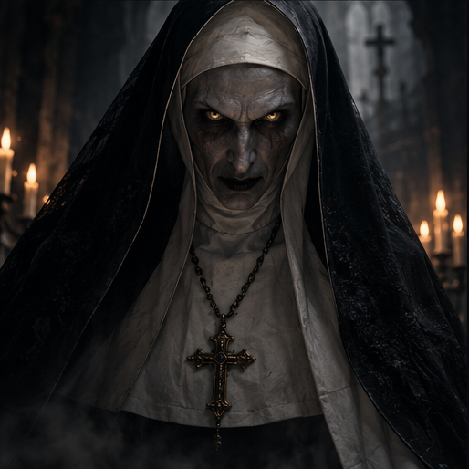
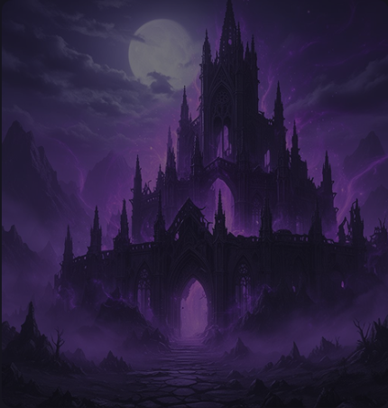
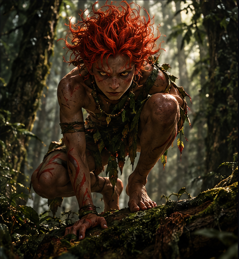
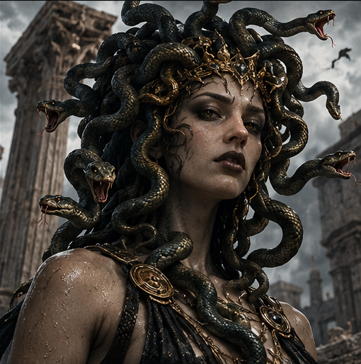

TERROR
Valak
Entidade demoníaca conhecida por sua representação aterrorizante no universo cinematográfico de A Freira.
UM ATLAS DO IMPOSSÍVEL
Conheça seres, mitos e mistérios que atravessam gerações.
Explorar criaturas
Explore entidades, lendas e seres que habitam o imaginário de diferentes culturas.

TERROR
Entidade demoníaca conhecida por sua representação aterrorizante no universo cinematográfico de A Freira.

FOLCLORE
Protetor das florestas brasileiras, conhecido pelos cabelos avermelhados e pelos pés voltados para trás.

MITOLOGIA
Figura da mitologia grega, conhecida pelos cabelos de serpentes e pelo olhar capaz de transformar pessoas em pedra.
SOBRE O ATLAS
OBSCURA é um atlas visual dedicado à exploração de criaturas, entidades e mitos presentes em diferentes culturas e histórias. Uma coleção de relatos que atravessam o imaginário humano.